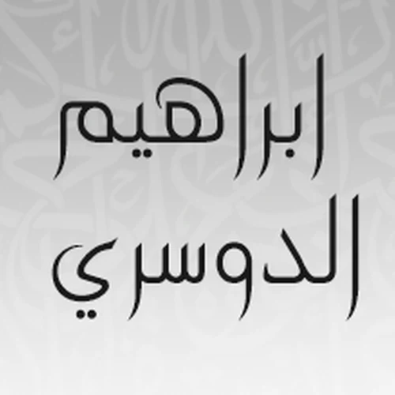

سورة المطففين بصوت الشيخ العيون الكوشي
الاستماع لسورة المطففين بصوت الشيخ العيون الكوشي مع إمكانية التحميل المباشر للسورة بصيغة MP3
تحميل سورة المطففين MP3سور أخرى بصوت الشيخ العيون الكوشي
سورة المطففين بصوت قراء آخرين
 سورة المطففين بصوت الشيخ محمد خليل القارئ
سورة المطففين بصوت الشيخ محمد خليل القارئ
 سورة المطففين بصوت الشيخ هيثم الدخين
سورة المطففين بصوت الشيخ هيثم الدخين
 سورة المطففين بصوت الشيخ أبو بكر الشاطري
سورة المطففين بصوت الشيخ أبو بكر الشاطري
 سورة المطففين بصوت الشيخ حاتم فريد الواعر
سورة المطففين بصوت الشيخ حاتم فريد الواعر
 سورة المطففين بصوت الشيخ صالح الشمراني
سورة المطففين بصوت الشيخ صالح الشمراني
 سورة المطففين بصوت الشيخ سيد رمضان
سورة المطففين بصوت الشيخ سيد رمضان
 سورة المطففين بصوت الشيخ عبدالله الخلف
سورة المطففين بصوت الشيخ عبدالله الخلف
 سورة المطففين بصوت الشيخ محمد الأمين قنيوة
سورة المطففين بصوت الشيخ محمد الأمين قنيوة
 سورة المطففين بصوت الشيخ سيد أحمد هاشمي
سورة المطففين بصوت الشيخ سيد أحمد هاشمي
 سورة المطففين بصوت الشيخ محمد صالح عالم شاه
سورة المطففين بصوت الشيخ محمد صالح عالم شاه
 سورة المطففين بصوت الشيخ زكي داغستاني
سورة المطففين بصوت الشيخ زكي داغستاني
 سورة المطففين بصوت الشيخ محمد سايد
سورة المطففين بصوت الشيخ محمد سايد
 سورة المطففين بصوت الشيخ محمد الفقيه
سورة المطففين بصوت الشيخ محمد الفقيه
 سورة المطففين بصوت الشيخ الفاتح محمد الزبير
سورة المطففين بصوت الشيخ الفاتح محمد الزبير
 سورة المطففين بصوت الشيخ موسى بلال
سورة المطففين بصوت الشيخ موسى بلال
 سورة المطففين بصوت الشيخ عادل ريان
سورة المطففين بصوت الشيخ عادل ريان
 سورة المطففين بصوت الشيخ يوسف بن نوح أحمد
سورة المطففين بصوت الشيخ يوسف بن نوح أحمد

سورة المطففين بصوت الشيخ إبراهيم الدوسري سورة المطففين بصوت الشيخ محمد صديق المنشاوي
سورة المطففين بصوت الشيخ محمد صديق المنشاوي
 سورة المطففين بصوت الشيخ نعمة الحسان
سورة المطففين بصوت الشيخ نعمة الحسان
 سورة المطففين بصوت الشيخ أنس العمادي
سورة المطففين بصوت الشيخ أنس العمادي
 سورة المطففين بصوت الشيخ صلاح الهاشم
سورة المطففين بصوت الشيخ صلاح الهاشم
 سورة المطففين بصوت الشيخ سعد المقرن
سورة المطففين بصوت الشيخ سعد المقرن
 سورة المطففين بصوت الشيخ إبراهيم الأخضر
سورة المطففين بصوت الشيخ إبراهيم الأخضر
 سورة المطففين بصوت الشيخ مصطفى إسماعيل
سورة المطففين بصوت الشيخ مصطفى إسماعيل
 سورة المطففين بصوت الشيخ عبدالرحمن الشحات
سورة المطففين بصوت الشيخ عبدالرحمن الشحات
 سورة المطففين بصوت الشيخ عبدالباسط عبدالصمد
سورة المطففين بصوت الشيخ عبدالباسط عبدالصمد
 سورة المطففين بصوت الشيخ جمال شاكر عبدالله
سورة المطففين بصوت الشيخ جمال شاكر عبدالله